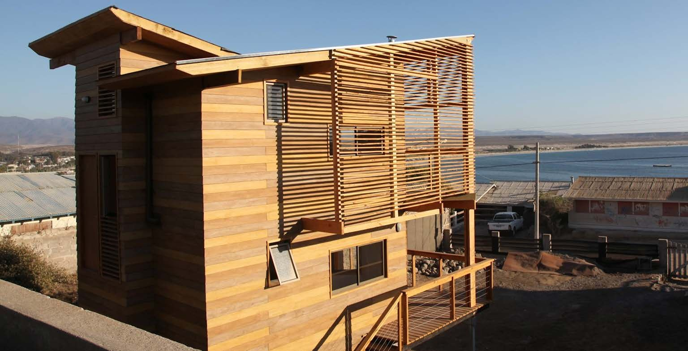

Construida · PremiadaKUBO 75
Compacta vertical · costa
Habitar mínimo con la lógica de un yate: cada metro trabaja. Ideal para parejas o familias pequeñas que quieren segunda vivienda sin mantención pesada.
- 75 m²
- 2 dormitorios
- 2,5 baños
- 3 niveles
- Obra en 40 días (Casa Kubo, 2010)
Desde [UF por definir]
Cotizar este modelo